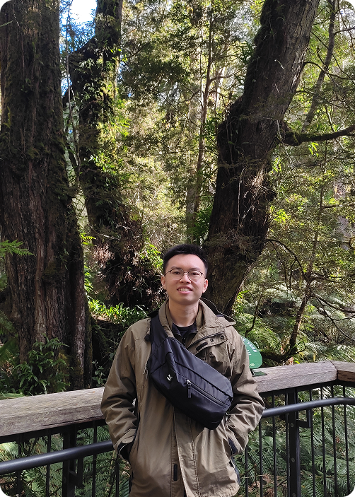

About Me!
Hi! I’m Yan Ming, a marketing graduate from Nanyang Technological University (NTU) with a deep interest for web design and UI/UX. I see great ideas as seeds—when nurtured, they grow into something meaningful.
My goal is to be the gardener who cultivates these ideas, blending strategy and creativity to craft digital experiences that are functional, intuitive, and engaging.
Beyond design, I find inspiration in nature, often immersing myself in gardening and the outdoors to fuel fresh ideas!
